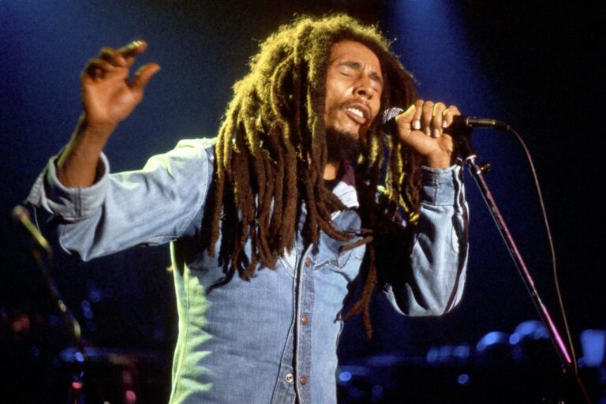

Robert Nesta Marley
O homem que levou amor e esperança á milhares...

Bob Marley
- 1945 - Nasce em Saint Ann, Jamaica
- 1955 - Se muda para uma comunidade em Kingston.
- 1962 - O empresário Leslie Kong ouviu Marley cantar e o convidou para gravar em estúdio o single “Judge Not”
- 1963 - Nasce a banda "The Wailers"
- 1966 - Bob se casa com Rita Anderson
- 1971 - A banda assina com a Island Records
- 1973 - Lançamento do albúm "Catch a Fire"
- 1974 - Lançamento do albúm "Burnin"
- 1976 - Lançamento do albúm "Rastaman Vibrations"
- 1976 - Dois dias antes do show, “Smile Jamaica”, Bob Marley sofreu um atentado quando homens armados entraram em sua casa. Os tiros feriram gravemente sua esposa Rita Marley e seu empresário Dom Taylor, enquanto Marley sofreu feridas leves no peito e no braço. Apesar do ocorrido, mesmo ferido, Marley se apresentou para uma multidão de 80 mil pessoas
- 1977 - Lançamento do albúm "Exôdos"
- 1977 - Recebeu a medalha da paz na sede da ONU
- 1977 - Bob é diágnosticado com um cancêr de pele, mas optou não tratá-lo por questoões religiosas
- 1979 - Lançamento do albúm "Survival"
- 1981 - Bob morre com apenas 36 anos de idade.
"Às vezes construímos sonhos em cima de grandes pessoas. O tempo passa e descobrimos que grandes mesmo eram os sonhos e as pessoas pequenas demais para torná-los reais!"
-- Marley, Bob...